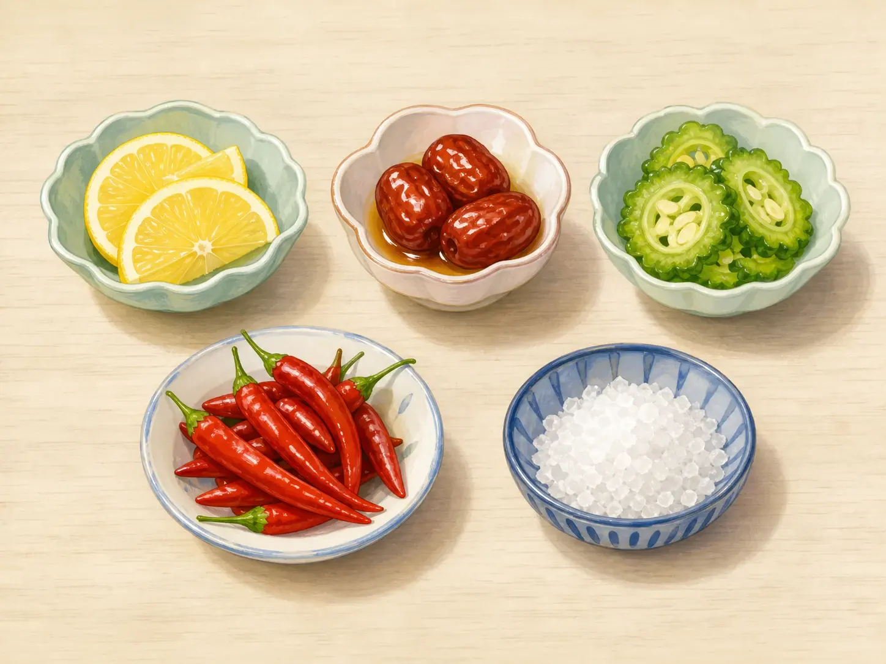
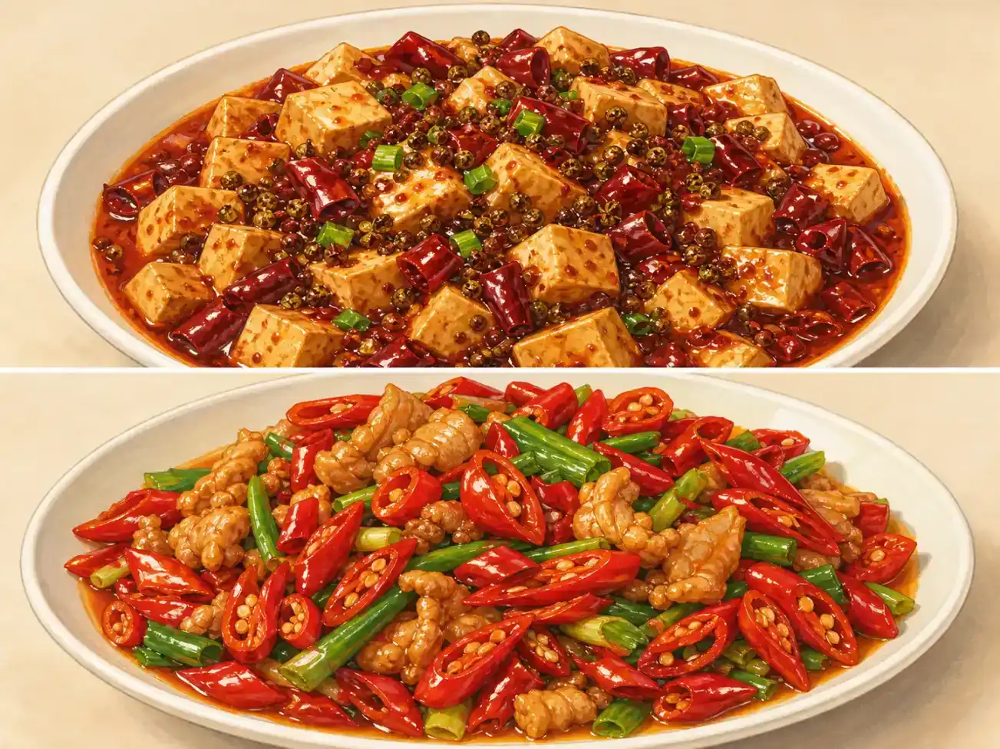
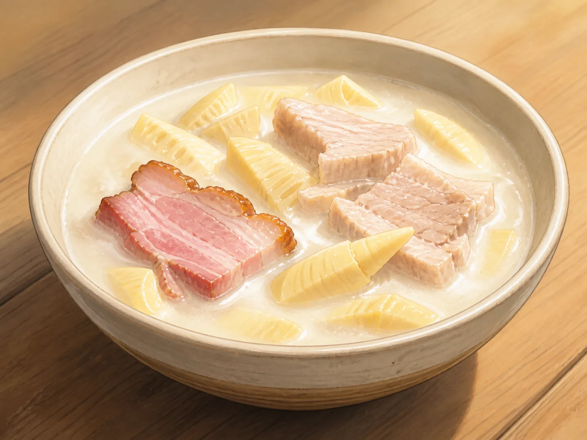

食物为什么有这么多味道？
Why Does Food Have So Many Flavors?
Page 1
味道不只来自舌头
Flavor Is More Than Taste

Traditional Chinese “five flavors” are sour, sweet, bitter, pungent, and salty. Modern taste science includes umami as a basic taste and treats chili heat as a burning sensation.
咬一口苹果。舌头尝到甜和酸，鼻子闻到果香，牙齿咬下一声“咔嚓”，嘴巴感觉到苹果又脆又凉。这些感觉合在一起，才是我们吃到的完整味道。
现代科学常说舌头能尝到甜、酸、苦、咸和鲜。鼻子带来香气，嘴巴还会感觉温度和软硬。少了其中一个，同样的食物就可能变得不太一样。
中国古人常用酸、甜、苦、辣、咸这“五味”来谈食物。“辣”在古代还可以包括姜、葱和花椒带来的刺激。这是一种流传很久的想法，和现代科学的分类不完全相同。
Take a bite of an apple. Your tongue tastes sweet and sour. Your nose catches the fruity smell. The apple crunches between your teeth, and it feels cool and crisp. All of these sensations help create its flavor.
Modern science often names five basic tastes: sweet, sour, bitter, salty, and umami, or savory. Smell adds aroma, while the mouth also feels temperature and texture. Take one part away and the same food may seem different.
Long ago, Chinese writers often talked about five flavors: sour, sweet, bitter, salty, and a sharp, lively flavor called la. Ginger, scallions, and Sìchuān · 四川 · A southwestern Chinese province containing extensive mountain habitat for giant pandas. pepper could all be la. It is an old way of thinking about food, not exactly the same as a modern science chart.
Page 2
山西的醋面为什么这么香？
Why Do Shanxi Vinegar Noodles Smell So Good?

A little vinegar adds sourness to hot noodles, along with an aroma the nose can detect.
Shānxī · 中国北部省份，保存着许多重要古建筑。是中国北方的一个省，那里有许多不同的面食，也以粮食酿成的醋闻名。一碗热面端上桌，有人会拌进一点深色的醋。
面条还没入口，酸香已经跟着热气飘了起来。吃上一口，舌头尝到酸和咸，鼻子闻到醋香，嘴巴感觉到面条又热又有嚼劲。醋带来的不只是一种酸味，它的香气也是这碗面的重要部分。
有人爱多放一点醋，有人只加几滴，也有人完全不加。即使吃同一碗面，每个人喜欢的味道也可能不同。
Shānxī · 山西 · A northern Chinese province with many important historic buildings. is a province in northern China. It is known for many kinds of noodles and for vinegar made from grain. When a hot bowl of noodles reaches the table, some people stir in a little dark vinegar.
Before the first bite, a rich, sour smell rises with the steam. Then the tongue tastes sour and salty while the mouth feels the warm, chewy noodles. Vinegar brings more than sourness. Its aroma is an important part of the bowl.
One person may love plenty of vinegar. Another may add only a few drops. Someone else may add none at all. Even at the same table, people can enjoy their noodles in different ways.
Page 3
无锡排骨为什么是甜的？
Why Are Wuxi Ribs Sweet?

Sugar, soy sauce, and spices cook down into a glossy sauce that is both sweet and salty.
Wúxī · 江苏南部的城市。是中国东部的一座城市。当地有一道很有名的酱排骨，颜色红亮，肉炖得很软，味道里带着明显的甜。
做这道菜时，厨师会把糖、酱油和香料同排骨一起慢慢煮。有的做法还会加入黄酒。水分一点点减少以后，汤汁变得浓稠，包在排骨外面。糖让酱汁有甜味，也让它看起来亮晶晶的；酱油和盐带来咸味，香料则让它闻起来更香。
所以，无锡排骨的甜味不是不小心放进去的。甜和咸原本就是这道菜的搭配。
Wúxī · 无锡 · A city in southern Jiangsu. is a city in eastern China. One of its well-known dishes is sauced pork ribs. The ribs are reddish brown, the meat is cooked until tender, and the sauce has a clear sweetness.
To make the dish, cooks slowly simmer the ribs with sugar, soy sauce, and spices. Some versions also use Chinese rice wine. As the water cooks away, the sauce becomes thick and coats the ribs. Sugar makes the sauce sweet and glossy. Soy sauce and salt add saltiness, while the spices add aroma.
The sweetness is not an accident. Sweet and salty are meant to be tasted together in this dish.
Page 4
苦瓜为什么和鸡蛋一起炒？
Why Cook Bitter Melon with Eggs?

Bitter melon is crisp and bitter, while egg is soft and mild. Some people enjoy it, and others do not.
苦瓜的表面凹凸不平，切开以后是淡绿色的。第一口可能很苦，让人马上皱起眉头。可是有人就是喜欢它清脆、微苦的味道，尤其是在天气热的时候。
苦瓜常常和鸡蛋一起炒。鸡蛋柔软，味道温和；苦瓜清脆，味道鲜明。鸡蛋不会把苦味变没，但它让同一口里多了一种柔和的味道。有些厨师会挖掉苦瓜里面柔软的白瓤，再把切好的苦瓜放进开水里烫一小会儿。这样可以让苦味淡一些。
很多人小时候不爱吃苦瓜，后来尝过几种做法，才发现自己开始喜欢它了。和鸡蛋或牛肉炒在一起时，苦味还在，但这一口里不再只有苦味。
Bitter melon has a bumpy green skin and pale green flesh. The first bite may make a new eater frown. Yet many people enjoy its crisp texture and bitter taste, especially in warm weather.
Bitter melon is often cooked with eggs. The egg is soft and mild, while the melon is crisp and bold. Egg does not make the bitterness disappear, but it gives the same bite a gentler flavor too. Some cooks scoop out the soft white part inside. They may also put the cut pieces in boiling water for a short time. Both steps can make the bitterness milder.
Many people dislike bitter melon when they are young. Later, after trying it a few different ways, they may begin to enjoy it. When it is cooked with eggs or beef, the bitter taste is still there, but it is no longer the only flavor in the bite.
Page 5
辣椒按响了“热”警报
Chili Rings the Heat Alarm

Chilies make the mouth feel hot, while Sichuan pepper brings a tingle. They are different sensations.
吃辣椒时，舌头并没有真的着火。辣椒里有一种叫辣椒素的东西，会按响身体感受“热”和“痛”的警报。大脑收到消息，于是你觉得嘴里热辣辣的。现代科学通常不把辣当成基本味觉。
花椒带来的“麻”又不一样。它会让嘴唇像有小气泡在跳。川菜里常常既有辣椒的辣，也有花椒的麻。菜里还可能有咸味和鲜味，但咸与鲜并不是同一种味道。
辣椒原来生长在美洲，四百多年前才来到中国。今天它已经走进许多中国厨房。尝辣不需要比赛；吃自己舒服的辣度就好，碰过辣椒也别揉眼睛。
When you eat a chili, your tongue is not truly on fire. Chilies contain something called capsaicin. It rings the body's alarm for heat and pain, so the brain receives a message that says, “Hot!” Modern science does not usually count chili heat as a basic taste.
The tingle of Sichuan pepper is different again. It can make the lips feel as if tiny bubbles are dancing on them. Sichuan dishes often combine chili heat with that special tingle. A dish may also taste salty and savory, but salty and savory are not the same taste.
Chilies first grew in the Americas and reached China a little more than four hundred years ago. Today they appear in many Chinese kitchens. Spicy food is not a bravery contest. Choose a level that feels comfortable, and never rub your eyes after touching a chili.
Page 6
竹笋给腌笃鲜带来了什么？
What Do Bamboo Shoots Add to Yanduxian?

Yanduxian slowly simmers salted pork, fresh pork, and spring bamboo shoots in a seasonal Jiangnan soup.
鲜味和咸味不是一回事。盐带来咸味，肉汤、蘑菇和番茄一类的食物却能带来一种浓厚、鲜香的味道，这就是“鲜味”，英文叫 umami。
图里是腌笃鲜，一种来自Jiāngnán · 长江下游以南、河湖密布的地区。地区的春季汤菜。江南在中国东部，包括Shànghǎi · 中国东部沿海的大城市。以及附近的江苏、浙江一带。做这道菜时，人们把咸肉、鲜肉和春笋放在一起，用小火慢慢炖。
春笋只在一年中的一段时间最鲜嫩，离开盛产竹笋的地方以后，也不一定容易买到特别新鲜的春笋，所以这道菜在别的地方没有那么常见。笋在汤里吸收咸肉的香味，也留下清甜和脆嫩的口感。咸肉带来咸味，肉汤带来鲜味，春笋让浓汤吃起来多了一点清爽。
Umami and saltiness are not the same. Salt gives food a salty taste. Meat broth, mushrooms, and tomatoes can give food a deep, savory taste called umami.
The picture shows yanduxian, a spring soup from Jiāngnán · 江南 · The warm, watery region south of the lower Yangtze River.. Jiangnan is a region in eastern China that includes Shànghǎi · 上海 · A major city on China's eastern coast. and nearby parts of Jiangsu and Zhejiang. To make the soup, cooks gently simmer salted pork, fresh pork, and spring bamboo shoots.
Spring bamboo shoots are at their best for only part of the year. Very fresh shoots can also be harder to find far from places where they grow, so yanduxian is less common outside its home region. The shoots soak up the flavor of the salted pork while adding a fresh taste and a tender crunch. The salted pork brings saltiness, the broth brings umami, and the bamboo shoots keep the rich soup from feeling too heavy.
不同的味道怎样配在一起？
How Do Different Flavors Work Together?
每道菜都有一种最容易尝出来的味道。无锡排骨的甜味很明显，苦瓜的苦味也很明显。但这并不是一道菜的全部味道。
酱油和香料让无锡排骨不只是甜；温和的鸡蛋和苦瓜放在一起，让苦味有了对比；腌笃鲜里的咸肉、鲜汤和清甜的春笋，则会同时出现在一勺汤里。正是这些浓淡不同的味道，让一道菜不只是“甜”“苦”或“咸”。
Every dish has a flavor that stands out. Wuxi ribs are known for their sweetness, and bitter melon is known for being bitter. But that is not the whole taste of either dish.
Soy sauce and spices keep Wuxi ribs from tasting only sweet. Mild egg adds a softer taste to bitter melon. In yanduxian, salty pork, savory broth, and fresh bamboo shoots fill the same spoonful. That mix of strong and mild flavors makes each dish more than simply sweet, bitter, or salty.